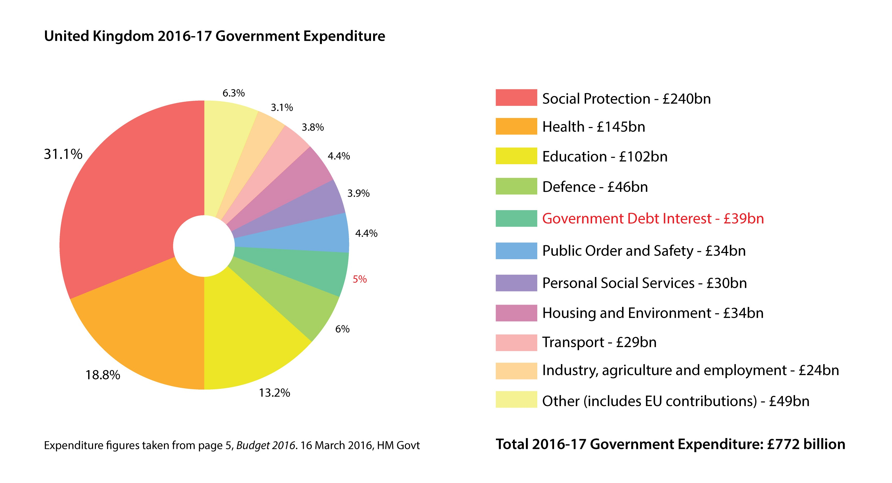

What Is Politics?
The idea of politics in the United Kingdom often brings to mind prominent political figures such as the Prime Minister, political parties such as the Conservatives and Labour, the Palace of Westminster (pictured below), voting in elections and following laws. while all these things are a part of politics, just by themselves it can make it seem distant and dull.
The core definition of politics is very simple:
Politics is about making decisions
Politics is about making decisions that are fair and just.
Politics is about people in groups making decisions that are fair and just as to how resources are shared and what people should do.
As you can see, the above definitions of politics can apply to any person or group of people. This group can mean a country and any of it's components such as cities or counties, and also groups of countries such as the European Union (EU); it can also mean a company, a sports club, a school and many other organised groups.
From the beginning of human history, people have formed groups, to work together towards common goals. In very small groups, everyone can be involved in all the decisions the group makes, but as groups get larger, naturally some people will start making decisions on behalf of the whole group, and this is really where politics begins.
To understand the definition above, let's break down and explore what each highlight part one means, using relatable examples to better appreciate the underlying principles.
Note: The words 'state', 'country' and 'nation' are often used interchangeably in political writing. This can be confusing as some large countries also have 'states' as one of their components, for example USA and Australia. Though these terms are subtly different, for the purposes of this course, we'll treat them the same
Making Decisions
How decisions are made, who gets to make them and who gets to enforce them is perhaps the most important decision of all.
There exists a fine balance between these elements and the way this balance exists has been a source of conflict in every group for all of human history.
When there is majority level of agreement as to this process, there is harmony, while disagreement can lead to conflict and historically violence.
The decision making process forms the basis of how countries are organised and and we'll be exploring these systems in the next section.
These decisions are implemented primarily in the form of laws, also called legislature.
A politician therefore is someone who is directly involved in the decision making process as part of the main decision making group, also known as the government.
Group Membership
There always exists the question of who belongs to the group, as some groups may be more preferable for some people to be in than others, due to the resources they have and what the people can do there.
For example, in a school a member can be thought of as anyone who studies at the school. Some schools are open to anyone under the age of 16, while others may require you to pass an entrance exam or pay fees.
You can be a member, also known as a citizen, of a country by being born there, but most countries also have processes where others can also become a citizen, and these processes come under immigration and naturalisation law.
You can also visit countries without having to become a citizen. Some countries have more open borders than others and most have different rules for entry depending on the person's country of origin, which is identified by a passport when you travel, and the reasons for their travel. The document that allows someone to legally enter a foreign country is called a visa. However depending on your passport you can visit some countries without requiring a visa, or you can obtain a visa once you're already there, rather than having to apply and obtain it beforehand. The ability to do this is known as the passport's Mobility Score

What Is Fair and Just
This aspect of politics is called ethics and is a part of every decision that is made. When asking what is fair and just, we are essentially asking what actions are good and what actions are evil and then using these principles in making decisions. Since this is a very broad field, let's look one area in which ideas of fairness and justice are on the forefront, criminal law.
Even things that on the surface may seem to be straightforward, such as the morality of killing, can be highly dependent on the situation in which it occurs. Let's look at a thought process on deciding whether killing someone is wrong:
"Killing someone is wrong, and if someone does they must be punished and separated from the rest of society to protect others"
"But what if their life was in danger from someone else and it was done in self defense. That must be okay"
"But what if they used unneccessary force, that is they shot someone when all that happened was an unarmed person pushed them slightly. That doesn't seem right"
"What if another person walks past someone else on the street who needed medical help and did nothing, resulting in their death. Is that wrong even thought they weren't directly involved?"
Things get more complicated when determining the degree of punishmentthe wrong doer must receive to deter others from doing the same thing, or the level of compensation the victim gets.
Sharing Resources
The primary resource here is often money, but this is simply because we use money as a store and exchange of value for many different things. The money itself can represent any other resource. A gym may have to decide between hiring more personal trainers or buying new equipment, using the fees they charge their members for using their facilities. They may then have to decide which classes the personal trainers should teach, allocating the resource of labour or people.
Countries have a national budget, money that has been collected through taxes that they then decide how to spend. It may be spent on public services like healthcare and public transport, while in countries whose political systems aren't as fair and could be seen as corrupt, a large proportion may go directly to the leader's personal accounts. Another important resources in countries is land and the natural resources they contain. Historically many wars have been fought over this resource.
Countries may also decide to trade their own resources with other countries, known as imports and exports. For example, 60% of food consumed in Japan is imported in, because it has little land area that is suitable for farming, while it is the world's 2nd largest exporter of cars
What People Should Do
These can be broadly divided into rights and freedoms and duties and responsibilities
Rights and freedoms are those things that apply to every human and cannot be taken away. They are based on shared values like dignity, fairness, equality, respect and independence. No one can violate or take away someone else's basic rights and freedoms.
While different countries may ensure different fundamental rights for their citizens, they often include things like the freedom from slavery, the right to a fair trial and the right to education. The UK follows the European Convention on Human Rights, which also includes the abolition of the death penalty, which for example is not present in all states in the USA; and freedom of expression (freedom of speech and the media), which for example many would argue is not present in China.
The duties and responsibilities aspect can be thought of as applying and extending these rights and freedoms, in different areas and processes. For example contract law outlines how agreements must be made between different parties in different situations, like hiring employees. The lack of these laws may mean employees being made to do unsafe tasks or work extremely long hours. Meanwhile property law ensures that your belongings, which could range from land and houses to personal items like computers and phones, cannot be unfairly taken from you.
It is easy to take the existence of these for granted if we've grown up having been accustomed to their presence, but it's important to remember that they weren't always around and for many people in the world are still not there.